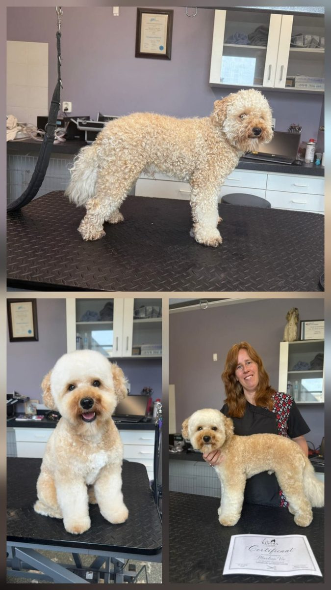
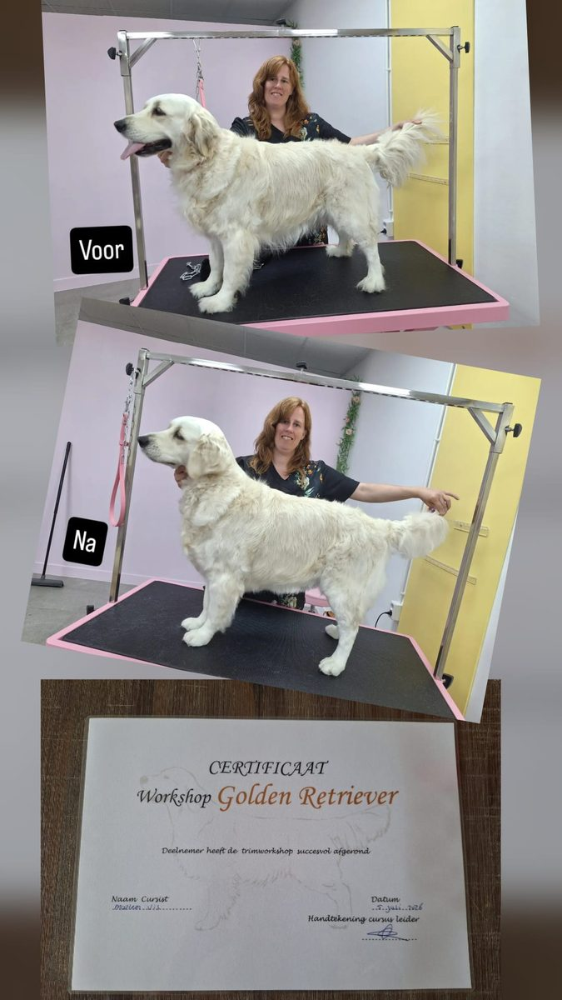

Gediplomeerd trimster met een passie voor dieren — en een salon waar rust en aandacht vooropstaan.

Trimsalon Andijk bestaat al sinds 2003 en is in al die jaren uitgegroeid tot een vertrouwd adres voor hondenverzorging in de regio. Vaste klanten weten de weg te vinden, en nieuwe honden zijn net zo welkom.
Sinds ongeveer een jaar is Marleen de vaste trimster van de salon. Als gediplomeerd trimster verzorg ik elke hond met aandacht en vakmanschap, en zet ik de vertrouwde, persoonlijke aanpak van de salon met veel plezier voort. Ik blijf mij ontwikkelen met specialisatie-workshops, zodat elk ras precies de verzorging krijgt die het verdient.
Ik werk voornamelijk 1-op-1 met de hond om stress te voorkomen. Zo krijgt uw hond alle aandacht die het op dat moment nodig heeft — soms met een kleine overlap wanneer de volgende klant arriveert.
Daarnaast werk ik uitsluitend met professionele producten en materialen, zodat uw hond de best mogelijke verzorging krijgt.
Neem contact op
Voor de beste ervaring voor uw huisdier vragen wij twee dingen: wees op tijd voor de afspraak en zorg dat uw hond goed is uitgelaten vóór de trimbeurt. Dat vermindert stress en zorgt dat we comfortabel en met aandacht kunnen werken — een goede voorbereiding draagt bij aan een positieve ervaring voor iedereen, vooral voor uw huisdier.
U betaalt niet alleen voor een geknipte vacht, maar voor alles wat u níet ziet: vakmanschap, kennis van vacht en gezondheid, en een trimster die signalen herkent, rustig blijft en de tijd neemt. Kwaliteit boven snelheid — u betaalt niet voor hoe uw hond eruitziet, maar voor hoe hij zich voelt tijdens de behandeling. 🐾
Kies voor aandacht — maak een afspraak